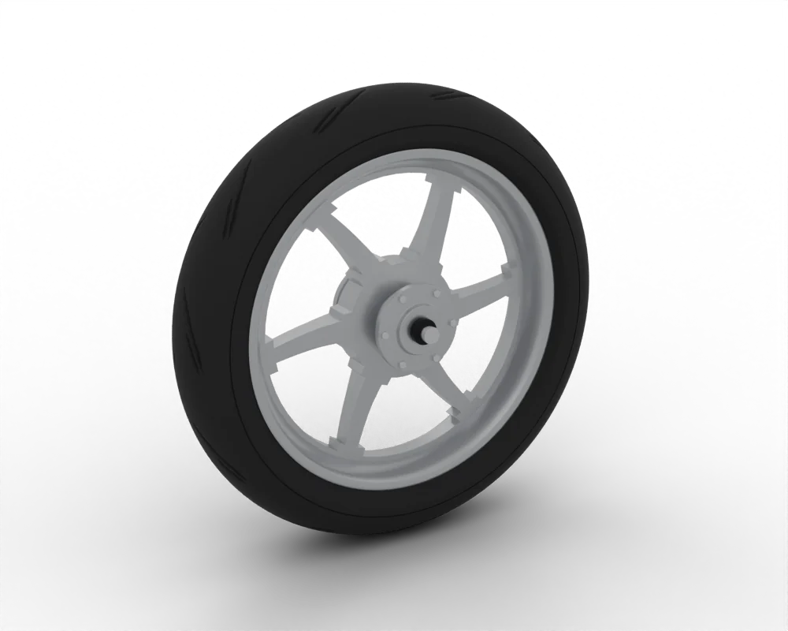
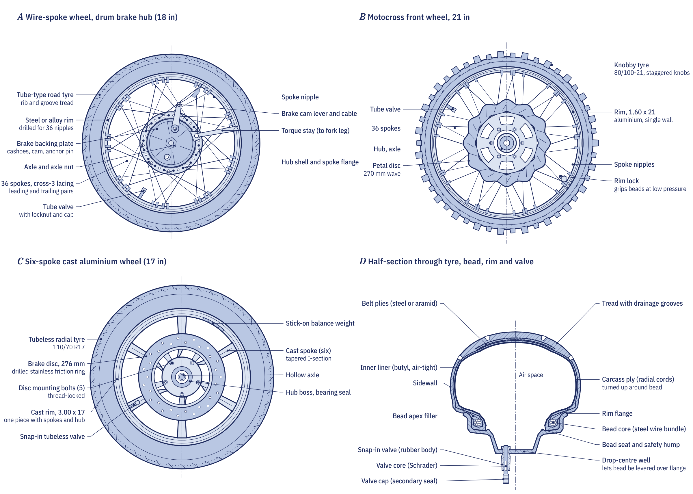

Why it matters
All the propulsive, cornering and braking forces finally act at the tyre contact patch, roughly 20 to 40 cm² on a commuter tyre. Its friction limits every acceleration, every corner and every stop. Pressure sets the size and shape of that patch, and the tread clears water from it.
Setting the pressure
Set pressures cold, before riding, with an accurate gauge, to the figures in the handbook. Riding warms the air in the tyre and raises the reading, so a pressure set warm will be too low once the tyre cools. The K-Light 125, the commuter used as the worked example in the Motopedia course, runs 190 ± 10 kPa (27.5 psi) front and 210 ± 10 kPa (30.5 psi) rear solo. Many handbooks give a higher rear pressure for a passenger or a heavy load.
- Under-inflation makes the tyre flex and overheat, wears the shoulders, and makes the steering heavy and vague. The K-Light manual lists low pressure as a cause of heavy steering and instability.
- Over-inflation shrinks the contact patch, reducing grip and comfort.
Check pressures at least monthly and before long trips; a weekly check is better for a working motorcycle. A tyre that needs air every week has a slow puncture, a leaking valve or a damaged bead seat.
Tread depth and wear indicators
Look for small raised blocks in the main grooves, marked by a triangle or the letters TWI on the shoulder. These tread wear indicators leave about 0.8 to 1 mm of tread when the surface is level with them. The K-Light 125 wear limit is 1 mm, which is also the legal minimum in the UK for machines over 50 cc; check the rules in your country.
Wear pattern matters as well as depth. A rear tyre used mostly in a straight line wears flat in the centre, and a square-worn tyre makes the bike drop suddenly into corners; replace it before it reaches the legal limit. Also look for cracks, nails, cuts and bulges on the tread and the sidewalls, and note any directional arrow, which must point in the direction of rotation.

Reading the sidewall
A size of 110/70-17 54H reads: section width 110 mm; aspect ratio 70 per cent, so the sidewall is 77 mm high; a dash for bias construction (R would mean radial, B bias-belted); a 17 inch rim; load index 54; and speed symbol H.
The load index is the maximum load per tyre at the reference pressure: 49 means 185 kg, 54 means 212 kg, 59 means 243 kg and 73 means 365 kg. The speed symbol is the maximum speed the tyre is rated for: J is 100 km/h, L 120 km/h, P 150 km/h, H 210 km/h and V 240 km/h.
Older commuter sizes such as 90/90-17 or 3.00-18 sometimes have no load and speed suffix. The K-Light 125 runs a 90/90-17 front and a 130/90-15 rear. Replacement tyres should match the size, load index and speed rating in the handbook. TL on the sidewall means tubeless and TT means tube type.
How old is too old?
The DOT code ends in four digits that give the week and year of manufacture: 2324 means week 23 of 2024. Rubber hardens with age even when a tyre is not used, so most makers recommend inspection from five years old and replacement at ten years regardless of tread. A low-mileage motorcycle can have plenty of tread on tyres that no longer grip.
Punctures and repairs
A tubeless tyre usually deflates slowly, because the rubber grips the object; a tube can split and deflate suddenly. A proper tubeless repair is a combined plug-patch fitted from inside after removing the tyre from the rim. Most tyre makers allow repairs only in the central part of the tread, for injuries no larger than about 6 mm, with no previous repair nearby and no sidewall or shoulder damage, and some do not allow motorcycle tyre repairs at all. An external string plug is a temporary get-you-home measure only, and a tube must never be fitted to cure a leak in a damaged tubeless tyre.

Wheels, balance and bearings
While you are at the wheel, spin it and watch the rim. The K-Light manual gives a runout standard within 1.0 mm and a limit of 2.0 mm, measured with a dial gauge. A shake through the handlebar at around 80 to 110 km/h usually means the wheel needs balancing. Lift the wheel and rock it at top and bottom: any play or roughness points to worn wheel bearings, which on the K-Light must not be reused once removed.
Tyres and brakes keep a rider upright more than any other part. If a tyre has a bulge, a deep cut or exposed cords, replace it before riding again.
The Repair section's pages for the front wheel and rear wheel collect wheel and tyre faults with their checks. Our brake pad guide covers the other half of the stopping system, and chapter 5.6 of the course, Wheels and tyres, includes the full tyre-fitting and balancing job sheet.
Go deeper
- Chapter 5.6: Wheels and tyres: construction, markings and fitting
- Equations summary: pressure units and rolling circumference
- Drivetrain and chassis quiz: test yourself on Module 5
- Tyre pressure check
- Tyre inspection
- Tyre replacement
- Cupped tyre
Frequently asked questions
What should my motorcycle tyre pressure be?
Use the figures in your handbook, set cold. The K-Light 125 runs 190 ± 10 kPa (27.5 psi) front and 210 ± 10 kPa (30.5 psi) rear solo; many handbooks give a higher rear pressure with a passenger.
What is the minimum tread depth for a motorcycle tyre?
In the UK it is 1 mm for machines over 50 cc, which is also the K-Light 125 wear limit. Rules vary by country. Tread wear indicators leave about 0.8 to 1 mm.
How old can a motorcycle tyre be?
Rubber hardens with age. Most makers recommend inspection from five years old and replacement at ten years regardless of tread. The last four digits of the DOT code give the week and year of manufacture.
Can a motorcycle tyre puncture be repaired?
Sometimes. A tubeless tyre can be repaired with a combined plug-patch from inside if the hole is in the central tread, no larger than about 6 mm and away from other repairs, but some makers forbid motorcycle tyre repairs. String plugs are temporary only.
Written by Transitions Lab for the Motopedia open motorcycle course. Text and illustrations are licensed CC BY-SA 4.0. Figures and values come from the course modules; see sources and credits.